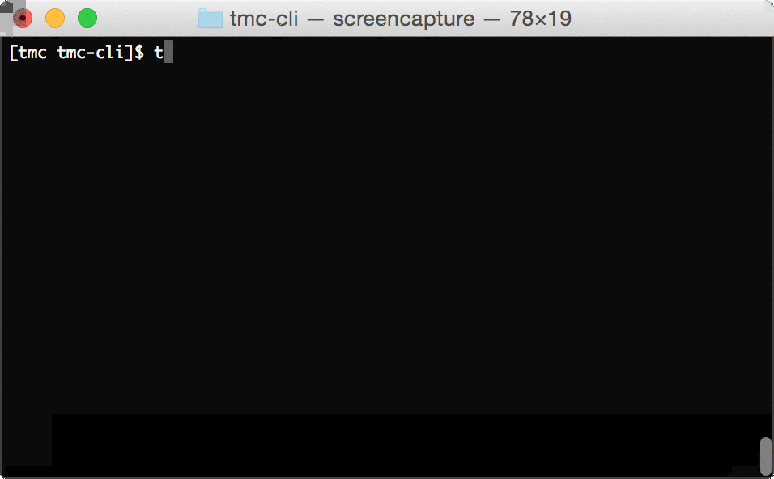
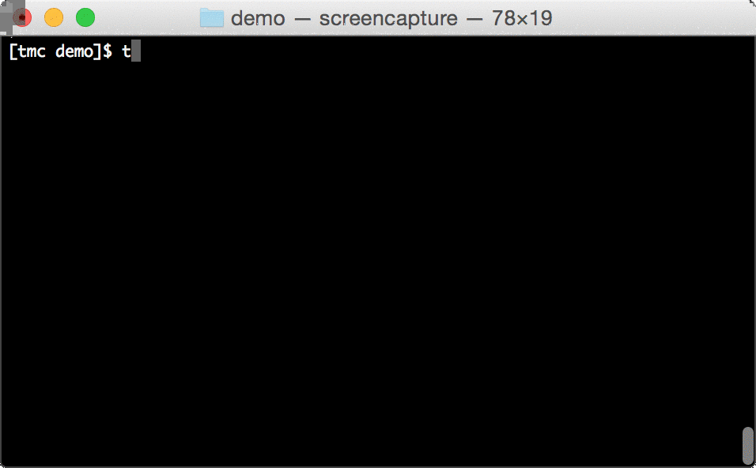
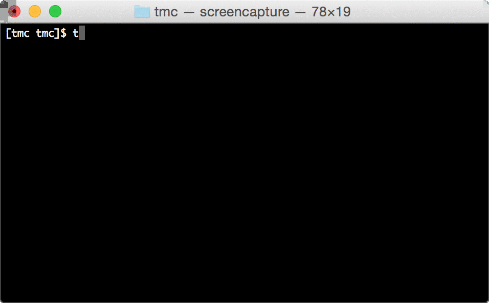
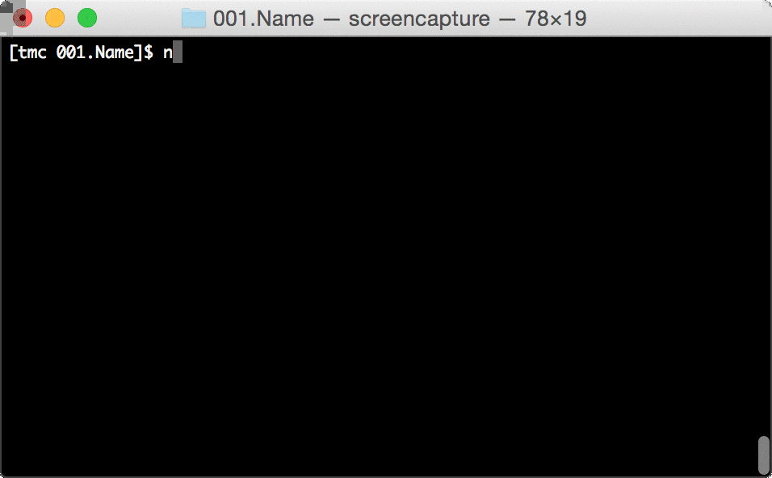

Installation instructions
Usage
Login

List courses to get ID of course

Download exercises by course ID

Run Tests in project folder

Submit in project folder

Reporting issues and bugs
Report issues and bugs to github issues or for maintainers. Suggestions for improvements are very welcome!
Maintainers
Current maintainer is RAGE -research group. Support is available in #testmycode @IRCnet